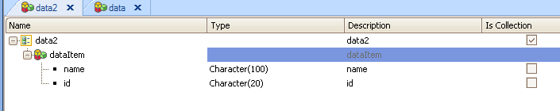
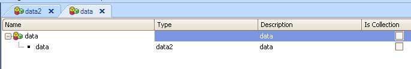

When GAM Authentication Type is Facebook, by using an ExternalToken which is given by Facebook, you can call the Facebook API. In the following example we get the list of friends of the user who is logged in.
Event Refresh
&SessionValid = GAMSession.IsValid(&Session, &Errors) //&Session is GAMSession data type, &Errors is collection of GAMError data type
If &SessionValid and not &Session.IsAnonymous
&User = GAMUser.Get() //&User is GAMUser data type
if &User.AuthenticationTypeName = 'facebook'
&ExternalToken = &Session.ExternalToken
endif
&httpClient.Host = "graph.facebook.com" //&httpclient is HTTPClient data type
&httpClient.BaseUrl = "/"
&HttpClient.Secure = 1
&StrCall = "me/friends" + "?" + "access_token=" + &ExternalToken
&httpClient.Execute("GET", &StrCall)
&ResultHttp = &httpClient.ToString()
&data.fromJson(&ResultHttp)
&data2 = &data.data
for &dataitem in &data2 //&dataitem is &data2.data
//Display Friends
msg(&dataitem.name)
endfor
else
do 'ProcessErrors'
Endif
EndEvent
Sub 'ProcessErrors'
For &Error in &Errors
If &Error.Code <> GAMErrorMessages.SessionExpired
Msg(Format("%1 (GAM%2)", &Error.Message, &Error.Code))
Endif
EndFor
EndSub
As calling this method of Facebook API returns a Json structure, we defined an SDT where the information could be loaded, so &data and &data2 are like the following, acording to the format of the Json data returned.  
|
| Backlinks |
| GAM Facebook Authentication Type |